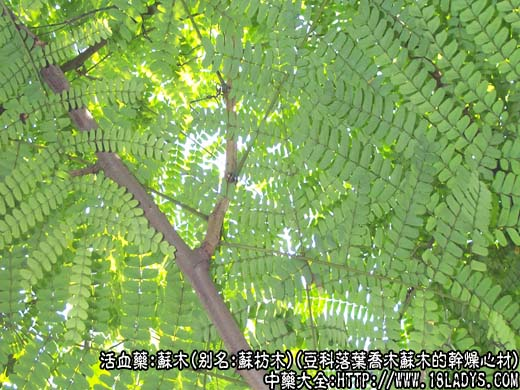
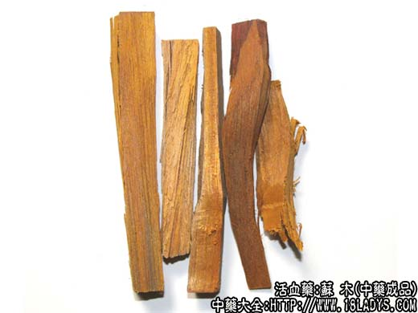
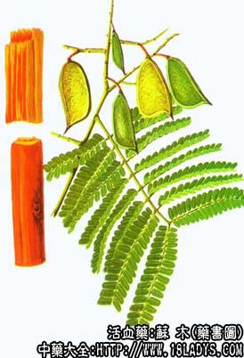

本品为少常用中药。始载《唐本草》，原名为“苏枋木”。
来源：为豆科植物落叶乔木苏木的干燥心材。野生或栽培。
产地：原是国外进口，产于印度及马来西亚等地，现我国广东、广西、云南已大量生产，此外贵州、台湾亦产。
性状鉴别：心材呈圆柱形或劈成长条状，有的连接根部则成不规则而稍弯曲的长条状，长8～100厘米，直径3～10厘米。表面暗红棕色或橙黄棕色，有红黄相间的纵向条纹，也可见刀削痕及细小的凹入油孔。横断面显年轮之同心环，有的中央具黄白色髓及点状闪光。质致密，坚硬沉重。以热水浸之，水杯染成樱红色，加酸则变为橙红色，加碱液时，仍为红色。气无，味无，味微涩。
以粗大，坚实，长条，少节疤，色红黄者为佳。
主要成分：含色素成分苏木素、挥发油等。
功效与作用：止血行血祛瘀、通络止痛。动物实验证实其作用为：
1、促进血凝。能显著缩短家兔血浆再钙化时间。
2、中枢抑制。有催眠作用，大剂量下甚至有麻醉作用，又能对抗马钱子硷的中枢兴奋作用。临床应用有镇静止痛效果可能与此有关。
附：体外试验苏木抗菌作用，其浸、煎液对金黄色葡萄球菌、流感杆菌、肺炎双球菌、白喉杆菌、弗氏痢疾杆菌等有较显著抑菌作用；对小白鼠离体子宫稍有抑制作用；又能增强离体蛙心的收缩力和促进蟾蜍的血管收缩。
炮制：镑片或劈碎。
性味：甘、咸、辛凉。
归经：入心、肝、脾经。
功能：行血祛瘀、消肿止痛。
主治：瘀血作痛，经闭腹痛，产后瘀阻，外伤瘀血，痈肿。煎汁可做燃料。
临床应用：主要用于伤科和妇科。
1、治跌打损伤所致的瘀肿疼痛，新伤旧伤都适用，内服外敷均可。内服常配其他祛瘀活血药，如乳香、没药、桃仁、红花等。外洗配刘寄奴、路路通等，有改善血液循环、促进消肿止痛的作用，方如跌打外洗方。凡跌打损伤而用洗剂，要注意在骨折未愈合时，只宜用洗剂热熏伤处，不要大力洗擦，对骨折已愈合的旧伤，遗留关节强直、肌肉挛缩时，就要热洗患部，一边熏洗，一边作适当按摩。
2、治产后流血过多，头晕、目眩、气短，苏木有助于止血，常配党参、麦冬等，方如苏木汤。
此外，苏木也可用于治肠炎、赤痢、大便带脓血，取其有抗菌作用，但须配其他清热燥湿药。
用量：内服2.4～9g，外用适量。